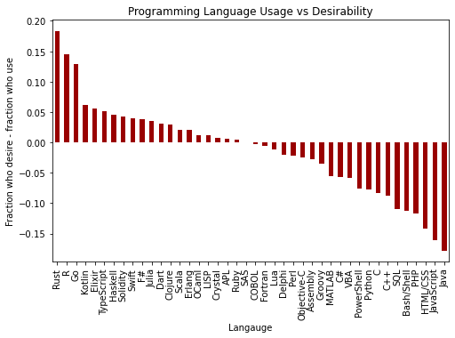

We can directly answer the question of popularity by looking at the percentage of responants who use each language (we only count respondants who answer this particular question). At the very top is C. Given it's wide platform portability, ranging from the lowest power microcontrollers to supercomputers, heavy usage in the Linux kernel and core components, it shouldn't be surprising to see most developers at least touching C.
Java, JavasScript, and Python were also frequently used in 2022. We don't however, have insight into just how often each of these languages are used, only that they were used at some point in the last year.
We can get an idea of how much developers like or want to use a language by seeing how they responded when being asked what languages they would like to use next year. Looking at the raw responses to this question yeilds similar looking results to what people area already using, but we can gain quite a bit more insight by looking at the difference between these two questions.
When comparing what developers want to use next year, versus what they are using this year, we can get an idea of what developers want and how the usage of languages may shift in time. Rust is at the top for developers wanting to pick up a new language, and has been gaining traction for a few years, with even the Linux kernel shifting to Rust. It seems very likely there will be an increase in projects and developers using rust through 2023.
It is interesting to note that COBOL, SAS, and Fortran sit dead last for the fraction of developers who wish to use it next year, but those who do are content with continuing to use it. But languages with heavy usage, such as Java, JavaScript, C, and even Python, have a significant number of developers that would like to move away.
While desirability can give us some indication for what languages may become more popular or start to die off, another metric we can look into is the typical age demographics of languages. This is not exact, as only age ranges were part of the survey, but this should be good enough for a qualitative feel.
Legacy languages like COBOL and Fortran tend to have an older demographic, but the spread of users is also quite wide. As seen above, the usage of these languages is already quite low, so it's likely these languages are part of legacy applications that are unlikely to change langauges, and will continue to bring in a small population of younger developers to continue maintaining these systems.
The Dart programming language has a young demographic with little spread in age, in addition to having positive trends in desirability. If this continues to attract young developers we may see a sharp rise in its usage.